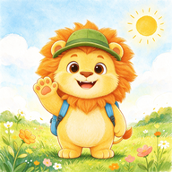
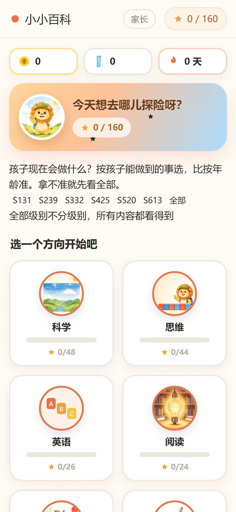
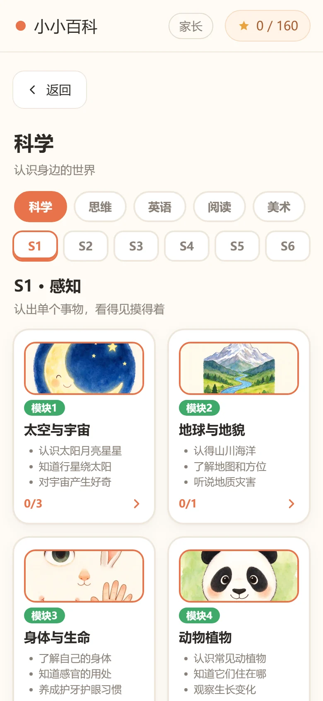
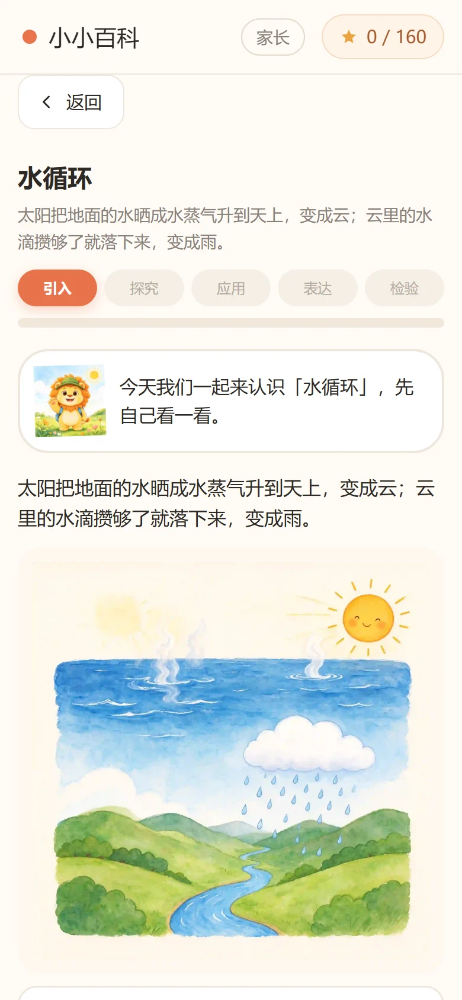
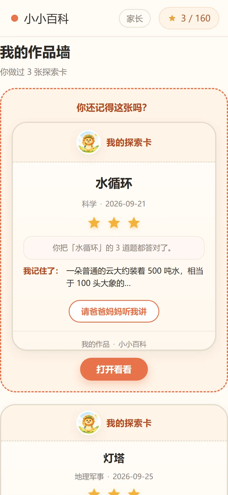
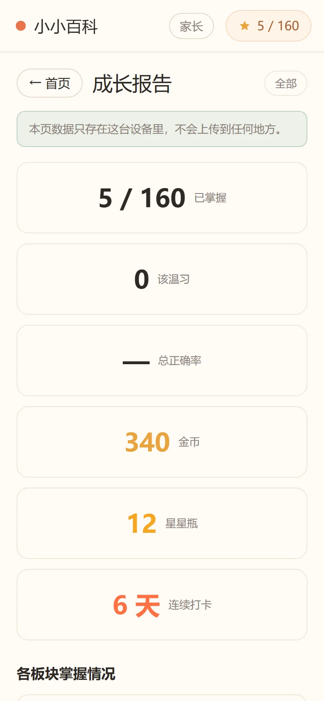
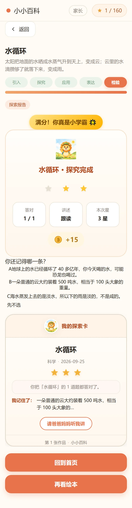

小小百科面向 3–8 岁的离线早教应用。7 大板块、160 个知识点、1127 张水彩手绘插画，配语音朗读与多题型互动练习。不联网、无广告、无账号，进度只存在这台设备里。

每一个交互都要求孩子对内容做一次判断、构造或解释。下面六件事，是这个应用真正的骨架。
一节课走完「引入 → 探究 → 应用 → 表达 → 检验」。不是知识点配一道题，而是一次完整的认知闭环：先制造疑问，再动手找线索，最后讲出来。
每节课产出一张「探索卡」，孩子从 3 条知识里挑一条「我记住了」——没有标准答案。卡片累积成作品墙，几天后系统会把旧卡片拿回来问「你还记得这张吗」。
807 段语音覆盖绘本逐页朗读、题目、反馈与鼓励。跟读复述只做「自我确认」降级——点一下「我会读了」，不录音、不申请麦克风权限。
听音辨词、配对、排序、选择题之外，还有描红、涂色、打地鼠、砸蛋、实验分支、放大镜点词。题型走统一契约注册，加新题型不需要改 UI。
S1 感知 → S2 辨认 → S3 关联 → S4 理解 → S5 推理 → S6 迁移。按「孩子现在能做到什么」分档，而不是按年龄硬切——拿不准就先看全部。
成长报告只看本机数据，不上传任何地方。反馈分三级：家长真人回应 → 系统回访旧作品 → 结构化自评问题。「问」比「夸」更能让孩子开口。
全部插画为原创水彩手绘，按统一画风规格生成并逐张校验代际一致。





报告页不给孩子打分排名，而是把这次学的东西变成一件可以带走的东西。孩子要从三条知识里挑一条「我记住了」——没有标准答案，选哪条都对。
没有框架、没有打包器、没有 node_modules 运行时。打开 index.html 就是全部。
core → ui → data 自上而下src/quiz-types/ 契约 {id,name,validate,create}localStorage，带版本迁移与非法数据降级www/ 打进 WebViewnpm run apk 一键出包INTERNET，不碰麦克风与相机内容、行为、可达性、媒体、插画质量、画风代际，各有专门的自动检查。提交前必须全绿。
| 闸门 | 查什么 | 当前 |
|---|---|---|
| validate | 内容结构、id 唯一性、题型合法性、答案越界、插画引用、级别完整性 | 160 / 160 |
| test | 行为契约单测 | 268 / 268 |
| check:reach | 入口可达性 + Service Worker 清单双向核对 | 166 / 166 |
| check:media | 磁盘上的媒体文件是否齐全 | 160 / 160 |
| check:art | 分辨率、三页互不相同、封面不复用内页、代码引用可达 | 1127 / 1127 |
| check:style | 用户可见插画是否统一在同一代画风 | 637 / 637 |
只需要 Node 22+ 和 Python 3（Python 仅用来起本地静态服务）。
# 克隆后进入目录 cd kids-app # 起本地服务（原生 ESM 必须走 http） python -m http.server 8765 # 浏览器打开 http://127.0.0.1:8765
npm install # 跑闸门 + 同步到 Android 工程 + 出包 npm run apk # 产物 android/app/build/outputs/apk/debug/
npm run check # validate + test，提交前必跑 npm run check:all # 六道闸一次跑完 npm run www # 生成 www/ 供 Capacitor 使用
装配层只有一个文件知道谁依赖谁，其余模块只认自己的契约。
kids-app/ ├── index.html 应用外壳，只负责挂载 ├── sw.js Service Worker，预缓存全部资源 ├── manifest.webmanifest PWA 清单 │ ├── src/ │ ├── main.js 装配层：唯一知道谁依赖谁的地方 │ ├── core/ DOM 助手、存储、语音、路由、偏好 │ ├── ui/ 首页、板块、课时、作品墙、家长面板 │ ├── data/ 九个领域的内容与课程矩阵，纯数据 │ ├── quiz-types/ 题型契约与各题型实现 │ ├── art/ 插画注册表（内联 SVG + 图片路径） │ └── images/ 水彩插画与吉祥物 │ ├── tests/ 268 条行为契约单测 ├── tools/ 六道质量闸与构建脚本 ├── docs/ 架构、画风规格、贡献指南 └── android/ Capacitor 生成的 Android 工程